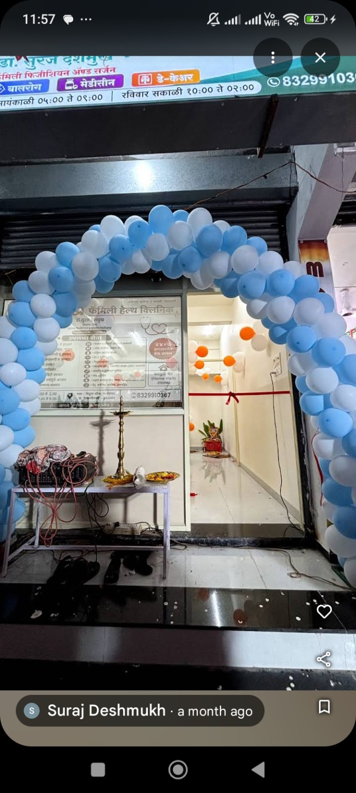
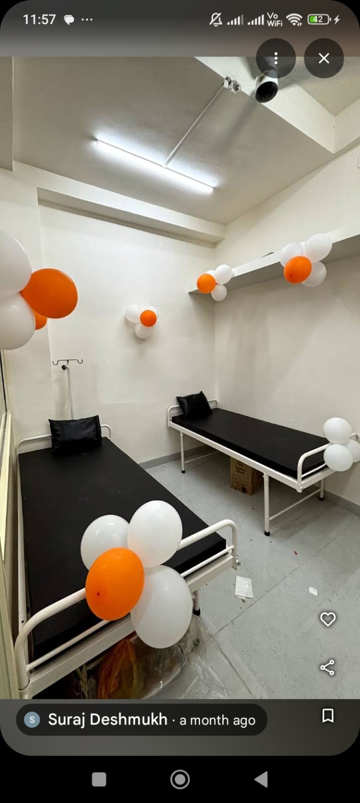

♡
Caring Approach
A polite and caring experience for patients and families.
FAMILY HEALTHCARE
Deshmukh Family Health Clinic provides caring family healthcare with a focus on proper diagnosis and affordable treatment.


OUR CLINIC
A comfortable clinic environment for patients and families.
ABOUT THE CLINIC
Deshmukh Family Health Clinic is a medical clinic located in Ram Nagar, N2, CIDCO, Chhatrapati Sambhajinagar.
The clinic focuses on proper diagnosis, caring consultation and affordable treatment.
Vithal Chowk, Ram Nagar, N2, CIDCO,
Chhatrapati Sambhajinagar, Maharashtra 431003
PATIENT CARE
A patient-focused approach built around careful consultation, proper diagnosis and accessible treatment.
A polite and caring experience for patients and families.
Focused consultation and proper diagnosis for patient care.
Accessible healthcare with a focus on affordable treatment.
PATIENT REVIEWS
Very polite dr, proper diagnosis and affordable treatment
Piyush Ubale Google Review · ★★★★★Highly recommended for quality family healthcare!
Sanket Patange Google Review · ★★★★★GET IN TOUCH
Call the clinic or get directions to visit us.
CONTACT
Quality family healthcare in Ram Nagar, CIDCO.
Vithal Chowk, Ram Nagar, N2, CIDCO,
Chhatrapati Sambhajinagar,
Maharashtra 431003
Open · Closes 10:00 PM